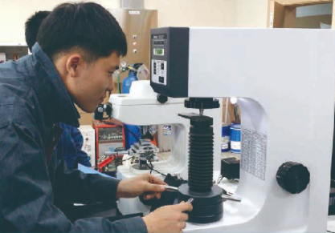

1. 학과 소개
산업설비(용접),재료분야, 금속 제조, 설계, 산업안전등의 전문 기술을 배우는 학과로 고부가가치의 숙련된 전문 기술인
양성.
2. 전공 과목
산업 설비(용접), 궤도정비, 군리더쉽, 자동 제어 시스템 운영, 제선, 제강, 금속 재료 신뢰성 시험, 금속 열처리,
기계요소설계
3. 실습내용
전기용접, 오토캐드, 솔리드웍스, PLC, 열처리, 금속재료 시험, 궤도정비, 자동제어시스템운용, 자동화 설비,
제선, 제강, 비파괴 실습 등
4. 취득 자격증
용접기능사, 제선기능사, 제강기능사, 생산자동화기능사, 금속재료기능사, 열처리기능사, 비파괴기능사
5.학과 특색 프로그램
군특성화 : 육군 자주포병 부사관 양성 사업(전문 부사관 임관)
철강 분양 선도 대학 협력 교육 프로그램 운영(무시험 특별전형 진학)
VR 장비를 통한 실험-실습
6. 출처
-
경기기계공업고등학교 홈페이지